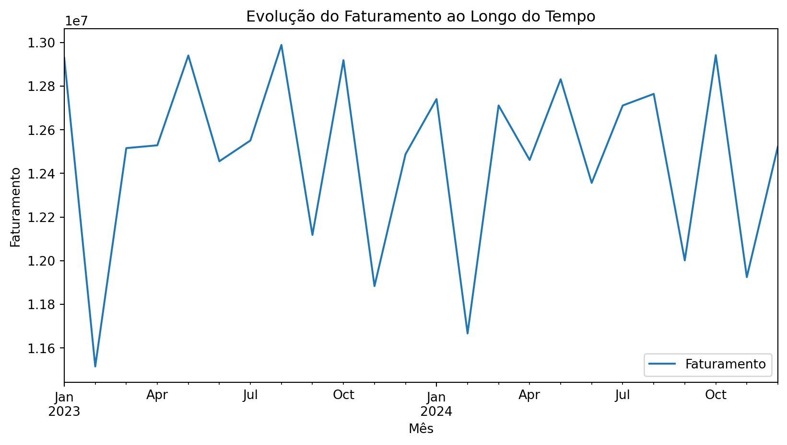

Prática de análise e tratamento de dados com Python e Pandas
Autor
Claudio
Data de Publicação
24 de agosto de 2026
Sobre a prática
Esta prática teve como objetivo explorar, tratar e analisar uma base de dados de vendas utilizando Python, Pandas e NumPy.
Durante a análise foram realizadas diferentes etapas de manipulação e exploração dos dados, passando desde o carregamento das bases até consultas, filtros, agrupamentos e análises de faturamento e metas.
0.1 Etapas realizadas
Carregamento das bases de dados
Inspeção dos dados
Tratamento de dados
Padronização
Remoção de duplicidades
Criação de novas colunas
Consultas e filtros
Agrupamento de dados
Análise de faturamento
Análise de produtos
Análise de metas
Análise temporal das vendas
Dados utilizados
Foram utilizadas duas bases de dados durante a prática.
0.1.1 Base de vendas
vendas_tech.csv
Contém os registros das vendas realizadas.
0.1.2 Base de gerentes
gerentes_lojas.xlsx
Contém informações dos gerentes das lojas e suas respectivas metas mensais.
A base de vendas possuía inicialmente 100.100 registros e 8 colunas.
1 Carregamento e exploração dos dados
A primeira etapa foi realizar o carregamento das bases utilizando Pandas.
Ver código
import pandas as pdimport numpy as npdf_vendas = pd.read_csv("../vendas_tech.csv", low_memory=False)df_gerentes = pd.read_excel("../gerentes_lojas.xlsx")display(df_vendas)display(df_gerentes)
ID_Pedido
Data
Loja
Produto
Preco_Unitario
Qtd
Cliente
Data_Base
0
1
2023-06-08
São Paulo
Mouse Gamer
120.0
1
Cliente_4095
2025-01-01
1
2
2023-03-01
Belo Horizonte
iPhone 14
5500.0
1
Cliente_8750
NaN
2
3
2023-02-25
NaN
Monitor 27"
1200.0
1
Cliente_14859
NaN
3
4
2024-11-19
RIO DE JANEIRO
Mouse Gamer
120.0
2
Cliente_17343
NaN
4
5
2024-01-27
Rio de Janeiro
Smartphone Samsung
2200.0
1
Cliente_23377
NaN
...
...
...
...
...
...
...
...
...
100095
94091
2023-10-20
Porto Alegre
iPhone 14
5500.0
1
Cliente_11755
NaN
100096
52883
2024-03-17
Porto Alegre
Notebook Dell
3500.0
2
Cliente_12879
NaN
100097
65070
2023-06-19
Belo Horizonte
Smartphone Samsung
2200.0
2
Cliente_8160
NaN
100098
94031
2024-06-14
Salvador
iPhone 14
5500.0
2
Cliente_28545
NaN
100099
36755
2023-01-03
São Paulo
Notebook HP
3200.0
2
Cliente_3274
NaN
100100 rows × 8 columns
Loja
Gerente
Meta_Mensal
0
São Paulo
Carlos
50000
1
Rio de Janeiro
Fernanda
60000
2
Curitiba
Roberto
45000
3
Belo Horizonte
Juliana
55000
4
Recife
Marcos
48000
5
Porto Alegre
Pedro
42000
6
Salvador
Ana
52000
1.1 Inspeção da base de vendas
Foram utilizadas diferentes funções do Pandas para conhecer a estrutura da base.
Ver código
display(df_vendas.shape)
(100100, 8)
A base possuía inicialmente 100.100 linhas e 8 colunas.
0 São Paulo
1 Belo Horizonte
2 NaN
3 RIO DE JANEIRO
4 Rio de Janeiro
...
100095 Porto Alegre
100096 Porto Alegre
100097 Belo Horizonte
100098 Salvador
100099 São Paulo
Name: Loja, Length: 100100, dtype: object
Loja
Cliente
0
São Paulo
Cliente_4095
1
Belo Horizonte
Cliente_8750
2
NaN
Cliente_14859
3
RIO DE JANEIRO
Cliente_17343
4
Rio de Janeiro
Cliente_23377
...
...
...
100095
Porto Alegre
Cliente_11755
100096
Porto Alegre
Cliente_12879
100097
Belo Horizonte
Cliente_8160
100098
Salvador
Cliente_28545
100099
São Paulo
Cliente_3274
100100 rows × 2 columns
2.2 Remoção de coluna
A coluna Data_Base foi removida da base utilizada para análise.
df_vendas_mes.plot( figsize=(10, 5), title="Evolução do Faturamento ao Longo do Tempo", xlabel="Mês", ylabel="Faturamento")

10 Conclusão
A prática permitiu aplicar diferentes recursos do Pandas e do NumPy em uma base de dados de vendas.
Durante o processo foram realizadas etapas de:
carregamento de dados;
inspeção;
tratamento de valores ausentes;
conversão de tipos;
padronização;
remoção de duplicidades;
criação de novas colunas;
filtros;
consultas com .loc e .iloc;
agrupamentos com groupby();
combinação de bases com merge();
análise de faturamento;
análise de produtos;
análise de metas;
análise temporal.
A prática também permitiu trabalhar com diferentes formas de consulta e transformação de dados, utilizando uma base de vendas com inicialmente 100.100 registros e 8 colunas.
10.1 Tecnologias utilizadas
Python
Pandas
NumPy
Jupyter Notebook
Quarto
10.2 Arquivos utilizados
pandas_supremo.ipynb
vendas_tech.csv
gerentes_lojas.xlsx
Vendas_SP.csv
Código fonte
---title: "Análise de Dados de Vendas"subtitle: "Prática de análise e tratamento de dados com Python e Pandas"author: "Claudio"date: todaydate-format: longlang: pt-BRformat: html: theme: cosmo toc: true toc-depth: 1 number-sections: true toc-title: "Sumário" toc-location: right code-fold: true code-tools: true code-summary: "Ver código" html-math-method: katexjupyter: python3execute: echo: true warning: false message: false---# Sobre a prática {.unnumbered}Esta prática teve como objetivo explorar, tratar e analisar uma base de dados de vendas utilizando **Python, Pandas e NumPy**.Durante a análise foram realizadas diferentes etapas de manipulação e exploração dos dados, passando desde o carregamento das bases até consultas, filtros, agrupamentos e análises de faturamento e metas.## Etapas realizadas- Carregamento das bases de dados- Inspeção dos dados- Tratamento de dados- Padronização- Remoção de duplicidades- Criação de novas colunas- Consultas e filtros- Agrupamento de dados- Análise de faturamento- Análise de produtos- Análise de metas- Análise temporal das vendas# Dados utilizados {.unnumbered}Foram utilizadas duas bases de dados durante a prática.### Base de vendas**`vendas_tech.csv`**Contém os registros das vendas realizadas.### Base de gerentes**`gerentes_lojas.xlsx`**Contém informações dos gerentes das lojas e suas respectivas metas mensais.A base de vendas possuía inicialmente **100.100 registros e 8 colunas**.# Carregamento e exploração dos dadosA primeira etapa foi realizar o carregamento das bases utilizando Pandas.```{python}import pandas as pdimport numpy as npdf_vendas = pd.read_csv("../vendas_tech.csv", low_memory=False)df_gerentes = pd.read_excel("../gerentes_lojas.xlsx")display(df_vendas)display(df_gerentes)```## Inspeção da base de vendasForam utilizadas diferentes funções do Pandas para conhecer a estrutura da base.```{python}display(df_vendas.shape)```A base possuía inicialmente **100.100 linhas e 8 colunas**.```{python}display(list(df_vendas.columns))```Também foram verificadas as informações dos tipos de dados e estatísticas descritivas.```{python}df_vendas.info()``````{python}display(df_vendas.describe())```A inspeção inicial permite compreender a estrutura da base antes de iniciar o tratamento dos dados.# Tratamento dos dadosApós a inspeção inicial, foram realizadas etapas de preparação dos dados para torná-los mais adequados para as análises.## Seleção de colunasFoi possível consultar colunas específicas da base.```{python}display(df_vendas["Loja"])lista_colunas = ["Loja", "Cliente"]display(df_vendas[lista_colunas])```## Remoção de colunaA coluna `Data_Base` foi removida da base utilizada para análise.```{python}df_analise = df_vendas.drop(columns=["Data_Base"])```## Tratamento de valores nulosOs valores vazios da coluna `Loja` foram preenchidos com `"Online"`.```{python}df_analise["Loja"] = df_analise["Loja"].fillna("Online")```## Conversão de datasA coluna `Data` foi convertida para o tipo `datetime`.```{python}df_analise["Data"] = pd.to_datetime( df_analise["Data"],format="%Y-%m-%d")```## PadronizaçãoForam removidos espaços desnecessários e os nomes das lojas foram padronizados.```{python}df_analise["Loja"] = df_analise["Loja"].str.strip()df_analise["Loja"] = df_analise["Loja"].str.title()df_gerentes["Loja"] = df_gerentes["Loja"].str.strip()df_gerentes["Loja"] = df_gerentes["Loja"].str.title()```## Remoção de duplicidadesOs registros duplicados foram removidos utilizando `ID_Pedido` como referência.```{python}df_analise = df_analise.drop_duplicates( subset=["ID_Pedido"])display(df_analise)```Após o tratamento, a estrutura da base foi novamente verificada.```{python}df_analise.info()```# Criação de novas informaçõesDepois do tratamento, foram criadas novas colunas para facilitar as análises.## FaturamentoO faturamento foi calculado multiplicando a quantidade vendida pelo preço unitário.```{python}df_analise["Faturamento"] = ( df_analise["Qtd"] * df_analise["Preco_Unitario"])display(df_analise[ ["Qtd", "Preco_Unitario", "Faturamento"]].head())```## Forma de vendaFoi criada uma coluna para classificar as vendas como **Online** ou **Presencial**.```{python}df_analise["Forma_de_Venda"] = np.where( df_analise["Loja"] =="Online","Online","Presencial")display( df_analise[ ["Loja", "Forma_de_Venda"] ].head())```## RegiãoFoi criado um dicionário relacionando cada loja à sua região.```{python}dic_regioes = {"São Paulo": "Sudeste","Belo Horizonte": "Sudeste","Online": "Online","Rio De Janeiro": "Sudeste","Salvador": "Nordeste","Recife": "Nordeste","Curitiba": "Sul","Porto Alegre": "Sul"}df_analise["Região"] = df_analise["Loja"].map(dic_regioes)display( df_analise[ ["Loja", "Região"] ].head())```# Consultas e filtrosNesta etapa foram utilizadas diferentes formas de consultar e filtrar informações da base.## Consulta utilizando `.loc`Foi realizada uma consulta utilizando o `ID_Pedido` para localizar informações específicas de um pedido.```{python}id_pedido =4loja = df_analise.loc[ df_analise["ID_Pedido"] == id_pedido,"Loja"].values[0]produto = df_analise.loc[ df_analise["ID_Pedido"] == id_pedido,"Produto"].values[0]cliente = df_analise.loc[ df_analise["ID_Pedido"] == id_pedido,"Cliente"].values[0]print("Loja:", loja)print("Produto:", produto)print("Cliente:", cliente)```## Consulta utilizando `.iloc`Também foi utilizada a localização por posição através do `.iloc`.```{python}loja = df_analise.iloc[3, 2]produto = df_analise.iloc[3, 3]cliente = df_analise.iloc[3, 6]print("Loja:", loja)print("Produto:", produto)print("Cliente:", cliente)```## Filtro por ID do pedido```{python}df_id_pedido_4 = df_analise[ df_analise["ID_Pedido"] ==4]display(df_id_pedido_4)```## Filtro das vendas de São PauloFoi criada uma nova tabela contendo apenas as vendas realizadas em São Paulo.```{python}df_vendas_sp = df_analise[ df_analise["Loja"] =="São Paulo"]display(df_vendas_sp)```Essa tabela também foi exportada para um arquivo CSV.```{python}df_vendas_sp.to_csv("../Vendas_SP.csv", index=False)```## Filtro das vendas de 2024Também foi realizada uma consulta para selecionar as vendas realizadas a partir de 2024.```{python}df_vendas_2024 = df_analise[ df_analise["Data"] >="2024-01-01"]display(df_vendas_2024)```## Filtro utilizando duas condiçõesFoi realizada uma consulta para encontrar vendas de **Cabo HDMI na região Sul**.```{python}condicao = df_analise["Produto"] =="Cabo HDMI"condicao2 = df_analise["Região"] =="Sul"df_vendas_CaboHDMI_Sul = df_analise[ condicao & condicao2]display(df_vendas_CaboHDMI_Sul)```# Análise de faturamento por lojaPara analisar o faturamento das lojas, foi utilizado o `groupby()`.O faturamento foi somado para cada loja e posteriormente organizado em ordem decrescente.```{python}analise_lojas = ( df_analise[ ["Loja", "Faturamento"] ] .groupby("Loja") .sum())analise_lojas = analise_lojas.sort_values( by="Faturamento", ascending=False)analise_lojas = analise_lojas.reset_index()display(analise_lojas)```## Ranking de faturamentoPara visualizar melhor o resultado, podemos representar o ranking graficamente.```{python}grafico_lojas = ( df_analise .groupby("Loja")["Faturamento"] .sum() .sort_values(ascending=False))grafico_lojas.plot( kind="bar", figsize=(10, 5), title="Faturamento por Loja", xlabel="Loja", ylabel="Faturamento")```# Análise dos produtos vendidos onlinePrimeiro foram selecionadas as vendas realizadas no canal online.```{python}df_vendas_online = df_analise[ df_analise["Loja"] =="Online"]display(df_vendas_online)```Em seguida, foi criado um ranking dos produtos pela quantidade vendida.```{python}analise_produtos_online = ( df_vendas_online[ ["Produto", "Qtd"] ] .groupby("Produto") .sum())analise_produtos_online = ( analise_produtos_online .sort_values( by="Qtd", ascending=False ))analise_produtos_online = ( analise_produtos_online .rename( columns={"Qtd": "Vendas Totais"} ))display(analise_produtos_online)```## Ranking dos produtos```{python}grafico_produtos = ( df_vendas_online .groupby("Produto")["Qtd"] .sum() .sort_values(ascending=False))grafico_produtos.plot( kind="bar", figsize=(10, 5), title="Produtos mais vendidos no canal Online", xlabel="Produto", ylabel="Quantidade vendida")```# Análise de produtos por lojaTambém foram realizados agrupamentos considerando loja e produto.### Produtos vendidos em cada loja```{python}analise_produtos_em_lojas = ( df_analise[ ["Loja", "Produto", "Qtd"] ] .groupby(["Loja", "Produto"]) .sum())display(analise_produtos_em_lojas)```### Lojas que mais venderam cada produto```{python}analise_lojas_em_produtos = ( df_analise[ ["Loja", "Produto", "Qtd"] ] .groupby(["Produto", "Loja"]) .sum())display(analise_lojas_em_produtos)```# Análise de metasUma das análises realizadas foi verificar quais lojas atingiram suas metas no mês de **janeiro de 2023**.Primeiro foram selecionadas as vendas desse período.```{python}df_meta = df_analise[ (df_analise["Data"].dt.year ==2023) & (df_analise["Data"].dt.month ==1)]```Em seguida, o faturamento foi agrupado por loja.```{python}df_meta = ( df_meta[ ["Loja", "Faturamento"] ] .groupby("Loja", as_index=False) .sum())display(df_meta)```## Cruzamento com a base de gerentesA base de faturamento foi combinada com a base de gerentes utilizando `merge()`.```{python}df_meta = df_meta.merge( df_gerentes, on="Loja", how="left")display(df_meta)```## Verificação da metaPor fim, foi criada uma nova coluna indicando se a loja atingiu sua meta mensal.```{python}df_meta["Bateu Meta"] = np.where( df_meta["Faturamento"] >= df_meta["Meta_Mensal"],"Sim","Não")display(df_meta)```Essa etapa permitiu comparar diretamente o **faturamento realizado** com a **meta mensal definida para cada loja**.# Evolução do faturamento ao longo do tempoTambém foi realizada uma análise temporal do faturamento.Primeiro foi criada uma coluna contendo o período de cada venda.```{python}df_analise["Mes-Ano"] = ( df_analise["Data"] .dt.to_period("M"))```Em seguida, o faturamento foi agrupado por mês.```{python}df_vendas_mes = ( df_analise[ ["Mes-Ano", "Faturamento"] ] .groupby("Mes-Ano") .sum())display(df_vendas_mes)```## Gráfico da evolução das vendas```{python}df_vendas_mes.plot( figsize=(10, 5), title="Evolução do Faturamento ao Longo do Tempo", xlabel="Mês", ylabel="Faturamento")```# ConclusãoA prática permitiu aplicar diferentes recursos do **Pandas** e do **NumPy** em uma base de dados de vendas.Durante o processo foram realizadas etapas de:- carregamento de dados;- inspeção;- tratamento de valores ausentes;- conversão de tipos;- padronização;- remoção de duplicidades;- criação de novas colunas;- filtros;- consultas com `.loc` e `.iloc`;- agrupamentos com `groupby()`;- combinação de bases com `merge()`;- análise de faturamento;- análise de produtos;- análise de metas;- análise temporal.A prática também permitiu trabalhar com diferentes formas de consulta e transformação de dados, utilizando uma base de vendas com inicialmente **100.100 registros e 8 colunas**.---## Tecnologias utilizadas- **Python**- **Pandas**- **NumPy**- **Jupyter Notebook**- **Quarto**## Arquivos utilizados- `pandas_supremo.ipynb`- `vendas_tech.csv`- `gerentes_lojas.xlsx`- `Vendas_SP.csv`